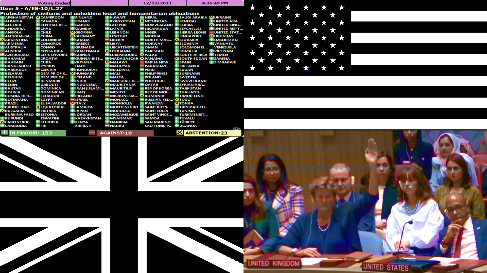
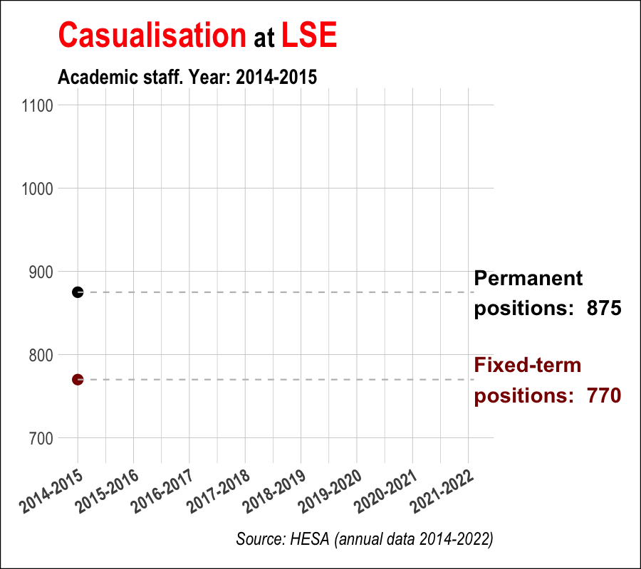

Yusuf Imaad Khan
Home
Blog - Rogue Analysis 📈
Resources
Connect
Email
Twitter
Mastodon
Github
PhilPeople
LSE Profile
Subscribe
Categories
All
(9)
Budget
(2)
Climate
(2)
Cooking
(1)
Corruption
(1)
Economics
(2)
Employment
(2)
Generative Art
(1)
Globalisation
(1)
Introductions
(1)
LSE
(2)
Money
(2)
Networks
(1)
Palestine
(2)
Politics
(3)
Satire
(1)
Strikes
(2)
UK
(1)
UN
(1)
US
(1)
Unions
(2)
Rogue Analysis 📈 (Blog)
Order By
Default
Title
Date - Oldest
Date - Newest
Author
Warmer, wetter, hotter, drier, harder, better, faster, stronger
Climate
Out of curiosity, I decided to roughly remake/build on an FT Climate Graphic
from early
March using ggplot2, Observable Plot, and D3.
Apr 14, 2024
Yusuf Imaad Khan
In our thousands, in our millions…🇵🇸
Palestine
Generative Art
Jan 2, 2024

The sycophantic stooge of US imperialism
Palestine
UK
US
UN
In light of the UK’s recent abstentions at the UN on a ceasefire in Gaza, I do some simple analysis on UK/US voting patterns at the UN General Assembly.
Dec 14, 2023
Yusuf Imaad Khan
Making the Hockey Sticks of Prosperity and Doom 🏒
Climate
Globalisation
The other day I made some charts for The Polycrisis newsletter. They were for a piece on the globalisation debate, written by Anthea Roberts and Nicolas Lamp. In this post, I offer some general reflections, and run through…
Sep 3, 2023
Yusuf Imaad Khan
The Vices of the Vice-Chancellors
LSE
Unions
Strikes
Employment
In response to UCU’s marking and assessment boycott (MAB), universities are threatening disproportionate and unjust pay deductions. This is unnecessary.…
Apr 27, 2023
Yusuf Imaad Khan

Academic casualisation across the UK
LSE
Unions
Strikes
Employment
Politics
Economics
Last week LSE UCU published a report called “The Crisis of Academic Casualisation at LSE”. I would recommend taking a look. They summarise their main findings in a tw…
Apr 6, 2023
Yusuf Imaad Khan
Make your very own fiscal black hole! 🧑🍳
Cooking
Politics
Economics
Money
Budget
Satire
Today at
Rogue Analysis
we’ll be looking at how to make your very own fiscal black hole! Usually this is a bit tricky to make at home because not everybody has…
Nov 18, 2022
Yusuf Imaad Khan
Visualising Truss’s Dodgy Donor Network
(and a Brief Look at UK Political Donations)
Networks
Corruption
Politics
Money
Budget
The recent £45bn “mini-budget”
1
was a disaster in both content and consequence. This is widely understood. To…
Oct 9, 2022
Yusuf Imaad Khan
Welcome to Rogue Analysis
Introductions
Hi. I’m Yusuf and this is my blog -
“Rogue Analysis”
. I’d like to join the community of philosophy blogs, practice my writing, and clarify a few thoughts.
Aug 28, 2022
Yusuf Imaad Khan
No matching items